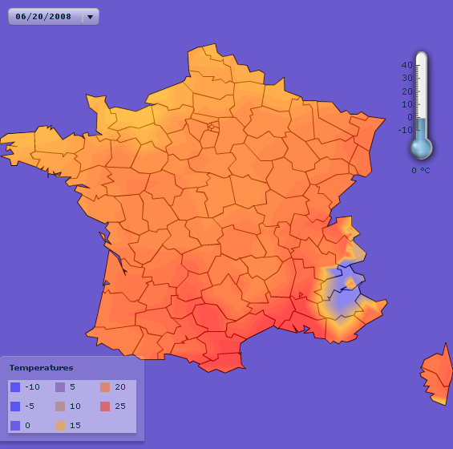

An IBM® ILOG Elixir heat map is a component that displays
the graphical representation of a property for a set of points..
If the data points are valued, that is, each point is associated with
a value, the graphical representation consists of regions known as areas of same value which can be
filled with different colors or just be delineated by contour lines
or both.
The following kinds of heat maps are available in IBM ILOG Elixir:
The
ValuedHeatMap control displays regions of same values for a set
of valued points. These are drawn as
isometric contours enclosing the
areas of same value which can be
filled with colors.
The
DensityHeatMap control is a density map drawn as a bitmap. Each
point is drawn as a circle with a radial color gradient.
The
MapHeatMap control aggregates a heat map with a map control.
The data displayed by the heat maps is set through a dataProvider property. This property is converted
to a collection of points, and the point set can be modified during
conversion. Properties are available in the heat map controls to help
in reading and converting input data.
The rendering of heat maps is controlled by a ColorModel object. The color model defines a set
of colors associated with values, allowing you to retrieve a set of
colors to represent a specified value. The colors returned are interpolated
to match the value of the query. Properties specific to each heat
map control are available to tune the display of the heatmap.
